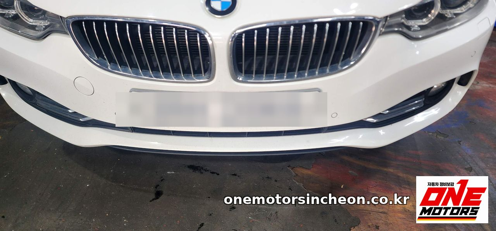
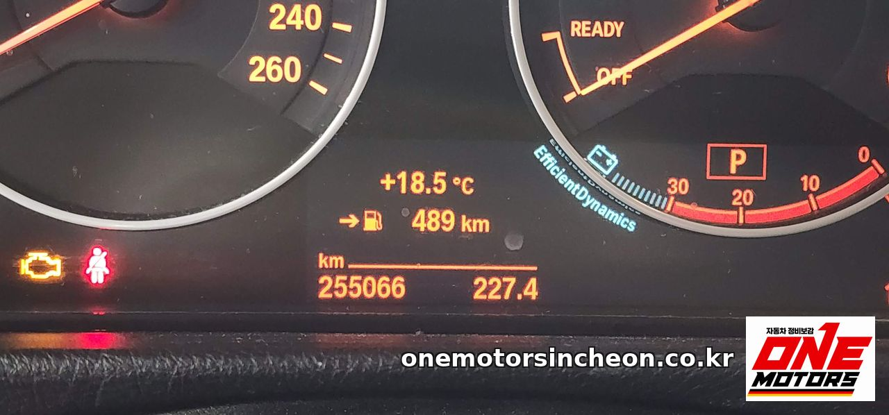
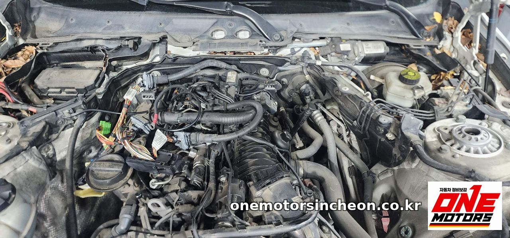
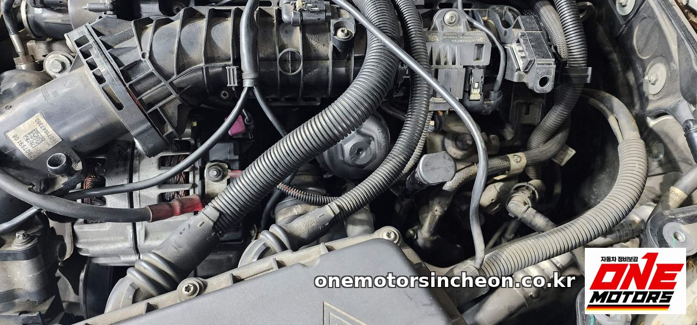
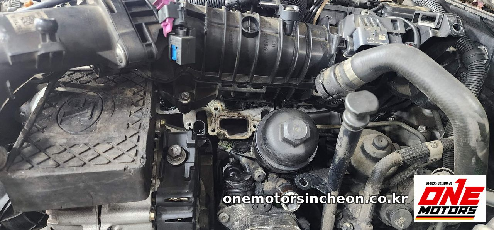
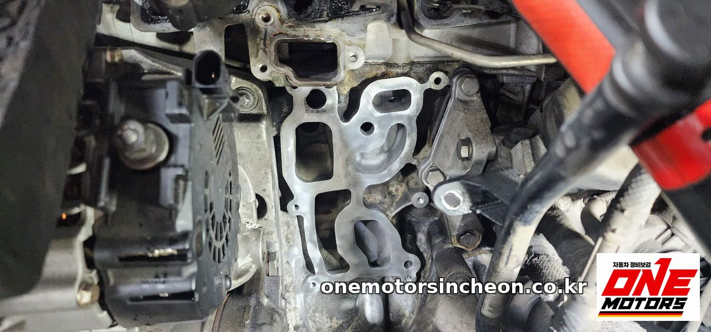
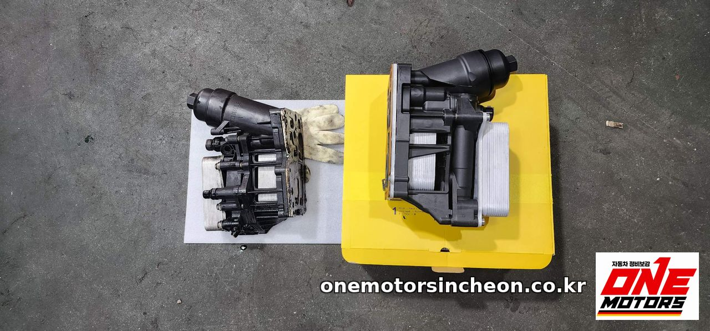
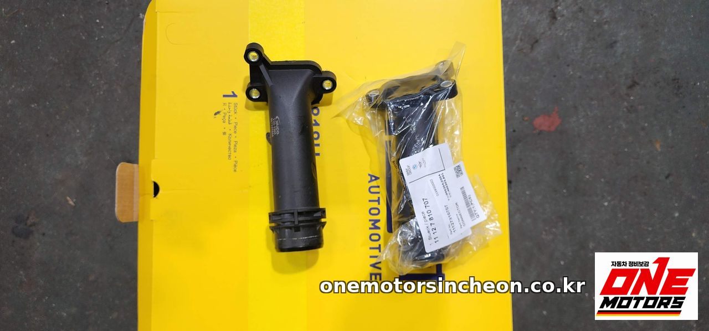
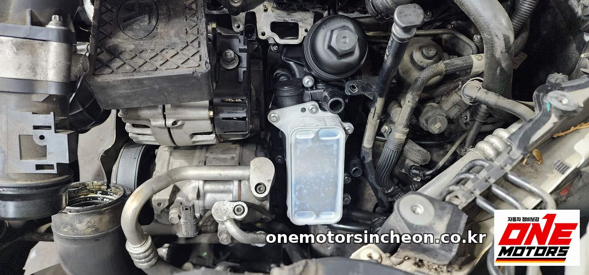

고장사례 및 검색 › BMW 420d 그란쿠페 (F36)
BMW 420d 그란쿠페 25만 km 엔진오일 누유 — 오일필터 하우징(오일쿨러 일체형)과 냉각수 커넥터 함께 교환
- 차량
- BMW 420d 그란쿠페 (F36) · 255,066 km
- 증상
- 엔진오일 누유로 들어오셨습니다. 주행거리는 255,066 km였습니다
- 원인
- 이 디젤 엔진의 오일필터 하우징에는 오일쿨러가 함께 붙어 있습니다. 한쪽 통로로는 엔진오일이, 다른 쪽으로는 냉각수가 흐릅니다. 두 유체가 한 부품 안에서 갈라져 있다 보니, 개스킷이 눌림을 잃으면 기름과 냉각수가 같은 자리에서 동시에 새기 시작합니다.
떼어낸 하우징과 신품을 나란히 놓으면 차이가 분명합니다. 떼어낸 쪽은 접촉면 둘레가 눌어붙은 오일로 덮여 있었습니다.
이 차에서 하나 더 본 것은 하우징 옆에 붙는 플라스틱 냉각수 커넥터입니다. 25만 km를 달리는 동안 열을 계속 받은 플라스틱은 탄성을 잃고 딱딱해집니다. 그 상태에서는 건드리는 순간 깨지거나, 조립 후 얼마 못 가 그 자리에서 다시 새기 쉽습니다. 하우징을 떼어낸 김에 커넥터도 함께 신품으로 바꿨습니다.
같은 자리를 두 번 열면 공임이 두 번 듭니다. 주행거리가 많은 차일수록, 열어둔 김에 주변 플라스틱 부품까지 함께 보는 편이 결과적으로 덜 듭니다. - 수리내역
- 누유 점검 — 오일필터 하우징 부위 확인 · 흡기 매니폴드 및 주변 배선 · 호스 탈거 · 오일필터 하우징 탈거 · 블록 접촉면 청소 · 신품 오일필터 하우징 장착 · 냉각수 커넥터 · 파이프 교환 · 흡기 매니폴드 재장착 · 엔진오일 교환 · 냉각수 보충 · 시동 후 누유 · 누수 재점검
- 교환부품
- 오일필터 하우징 (오일쿨러 일체형) · 냉각수 커넥터 · 파이프 · 엔진오일
정비 사진 9장









이런 증상으로 찾아오십니다
- BMW 420d 엔진오일 누유
- 420d 그란쿠페 누유
- BMW 4시리즈 오일 누유
- F36 그란쿠페 정비
- BMW 디젤 오일필터 하우징
- 오일쿨러 일체형 하우징 누유
- 하우징 접촉면 눌어붙은 오일
- 냉각수 커넥터 교환
- 플라스틱 커넥터 경화
- 플라스틱 부품이 깨졌어요
- 냉각수가 조금씩 줄어요
- 25만km BMW 누유
- 과주행 수입차 누유
- 오래 탄 차 플라스틱 부품
- 디젤 엔진 오일 누유
- BMW 2.0 디젤 누유
- 누유 수리할 때 같이 갈아야 할 것
- 한 번 열 때 같이 하는 게 싼 이유
- 하우징만 갈면 또 새나요
- BMW 누유 수리 기간
- 인천 BMW 정비
- 인천 4시리즈 수리
- 인천 디젤 수입차 정비
- 인천 과주행 수입차 정비
- 제물포구 수입차 정비소
- 인천 송현동 정비
- 원모터스 인천점
비슷한 증상이 있으시면 전화로 상담해 주세요. 차종과 연식, 증상만 알려주시면 예상 원인을 안내해 드립니다.
원모터스 인천점는 제조사 공식 서비스센터가 아닌 독립 정비업체입니다. 정비 내용은 차량 상태에 따라 달라질 수 있습니다.